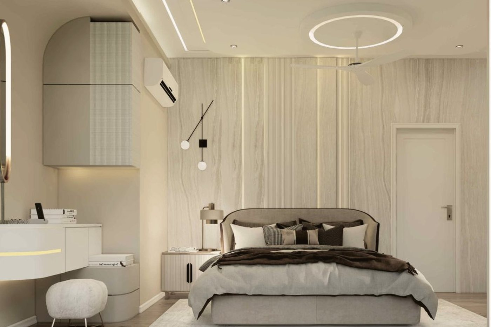
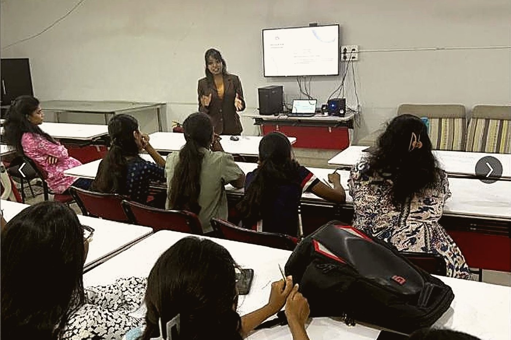
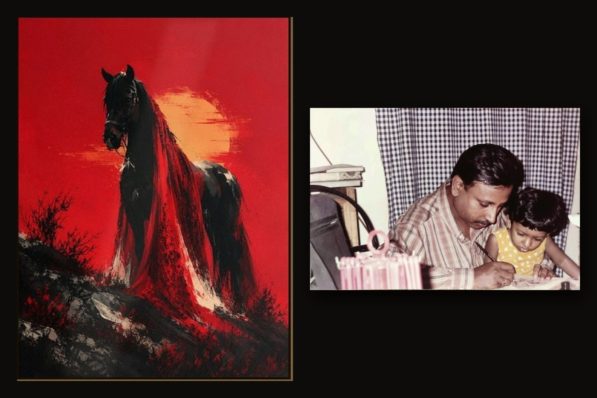

Click to enter →

A house of paintings, handmade furniture, and objects with history. My father worked at his canvas; I watched, and learned to see.
She saw the drawings, and my passion for art moved into architecture. The artist in me didn't leave — it changed scale: five years of school, a registered architect, the Celestial Trio in the frame beside you. Then the drawings became models, and the models met the site — cast-stone facades, JFK Terminals 1 & 6, Barclays Center.
Step inside Architecture & BIM →After my bachelor's, I returned to Vaishnavi School of Architecture, Hyderabad — this time at the front of the room. With the final-year students I talked about their "Design DNA" in portfolios and CVs, real talk about architecture salaries, building a "Digital Sandbox" online, "AI is Coming for Your Job (Maybe)", and the architecture grind itself. The Principal's letter of appreciation hangs with my father's paintings.
Step inside the lecture →Rooms with identity — culture, memory, and routine at human scale. My mentors walked their own ways; I kept walking, alone now, and built Archpainted: 40+ projects designed, 10+ carried through construction as their manager — a Nestlé laboratory, an army building in Delhi, homes and cafés. That is where I learned that drawings and reality part ways on the jobsite.
Step inside the Interiors →One prompt, and a full critical path comes out of a Revit model with every assumption visible. I build the automations that take the repetition out of construction work, and keep the output transparent and the project data private.
Step inside AI in construction →Move along the curve — every point is a room I walked into.